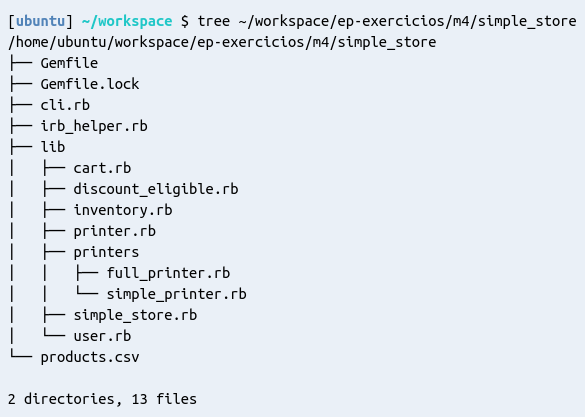

Nos exercícios deste módulo, você irá modificar e extender o código de um sistema de e-commerce simplificado de uma loja fictícia, a SimpleStore.
Crie o diretório ~/workspace/ep-exercicios/m4 para a resolução dos exercícios deste módulo. Vamos nos referir a este diretório por M4_DIR nas instruções restantes.
Baixe o código da SimpleStore com os comandos abaixo:
cp ~/.ep/cli/public/supplies/m04/simple_store.zip ~/workspace/ep-exercicios/m4/simple_store.zip
unzip ~/workspace/ep-exercicios/m4/simple_store.zip -d ~/workspace/ep-exercicios/m4
rm ~/workspace/ep-exercicios/m4/simple_store.zip
Verifique se o projeto foi baixado corretamente executando o seguinte comando no terminal:
tree ~/workspace/ep-exercicios/m4/simple_store
A saída deverá ser parecida com a figura abaixo:

Configure o projeto executando os comandos abaixo:
cd ~/workspace/ep-exercicios/m4/simple_store
bundle install
Crie uma nova classe, com nome Product, no projeto. Para fazer isso, siga os seguintes passos:
product.rb dentro do diretório M4_DIR/simple_store/lib.Product nesse arquivo.Nesta classe, defina o método initialize. Este método deverá ter um único parâmetro: um hash (isto é, o método irá receber um objeto da classe Hash).
Dentro do initialize, inicialize as seguintes variáveis de instância: @title, @price, @manufacturer, @barcode e @code. Os valores para estas variáveis serão passados no hash que o método irá receber.
'barcode' para a variável de instância @barcode. As exceções são as variáveis @manufacturer e @code, e estão explicadas a seguir.@manufacturer é uma exceção à regra acima. Para essa variável, você utilizará a chave 'manufacturer_code' do hash para obter o código do fabricante. Em seguida, precisará acessar a constante SimpleStore::AUTHORIZED_MANUFACTURERS e usar o código obtido para então obter o nome do fabricante e armazenar este nome na variável @manufacturer.@code deve conter um código único que identifica o produto. Este código deverá ser obtido chamando o método Product#generate_control_code com os valores das outras características do produto, conforme descrito mais abaixo.Cada variável de instância possui regras de validação, usadas para definir se um determinado valor é válido. Portanto, antes de inicializar cada variável de instância, você deverá fazer as seguintes verificações:
title (título do produto): não pode ser nulo nem vazio. Caso a validação falhe, use o seguinte trecho de código para lançar um erro e interromper a execução do programa: fail SimpleStore::Error, "O título do produto não pode ser vazio"
price (preço): deve ser um valor numérico maior ou igual a zero. Caso a validação falhe, use o código:fail SimpleStore::Error, "O preço do produto deve ser >= 0.0"
manufacturer (fabricante): o código do fabricante informado deve estar incluído na lista de fabricantes autorizados (ver constante SimpleStore::AUTHORIZED_MANUFACTURERS). Caso a validação falhe, use o código:fail SimpleStore::Error, "O fabricante não está autorizado"
barcode (código de barras): sem validação.code (código do produto): sem validação.Note que colocar o código que realiza estas validações diretamente no método initialize não é uma boa organização do código. Portanto, você deverá definir os setters apropriados para cada variável, e fazer a verificação dentro de cada setter.
Defina getters para cada variável de instância. Você pode definir esses
métodos explicitamente ou, de maneira mais concisa, usar o método attr_reader do Ruby.
Defina e implemente um método privado chamado generate_control_code que retorna a string que será usada como um
"identificador único" de produto (isto é, não podem existir dois produtos na nossa loja com o mesmo código). Esta string deve ser construída a partir de outros atributos do produto, da seguinte forma:
"{PRODUCT_TYPE_CODE}--{MANUFACTURER_CODE}--{BARCODE}"
# Por exemplo, um código válido é: "0--2--abcdef".
SimpleStore::PRODUCT_TYPES e SimpleStore::AUTHORIZED_MANUFACTURERS para descobrir como conseguir estes códigos.PRODUCT_TYPE_CODE deverá ser sempre o código correspondente ao tipo :Product, ou seja, ainda não vamos usar os diferentes tipos de produto existentes.Você pode testar o seu código no irb (interpretador de Ruby) da seguinte forma:
M4_DIR/simple_store.bundle exec irb para iniciar o interpretador.load 'irb_helper.rb'.2.3.0 :001 > Product.new()
SimpleStore::Error: O título do produto não pode ser vazio
2.3.0 :002 > Product.new('title' => 'Teste', 'barcode' => 'aaa111', 'manufacturer_code' => 0, 'price' => 10.50)
=> #<Product:0x007f986a0b71d8 @title="Teste", @price=10.5, @manufacturer_code=0, @manufacturer="OReillyMedia", @barcode="aaa111", @code="0--0--aaa111">
OBSERVAÇÃO: o código do projeto é carregado uma única vez, quando você carrega o arquivo irb_helper.rb. Por isso, sempre que você alterar qualquer arquivo do projeto, precisará salvar os arquivos e abrir o irb novamente, para que as modificações tenham efeito no terminal.
Outra forma de testar o código é executar a aplicação da "loja virtual" no terminal, executando o seguinte comando, supondo que o seu diretório atual seja M4_DIR/simple_store. No entanto, esta forma só estará 100% funcional após a implementação dos 3 exercícios.
bundle exec ruby -e "load 'cli.rb'".
Quando você estiver satisfeito com a sua resposta, utilize a ferramenta ep-cli para executar a correção do exercício (comando corrigir).
ep-cli corrigir --dir ~/workspace/ep-exercicios/m4 --dicas 4.1
Quando você tiver finalizado o exercício, utilize a ferramenta ep-cli para enviar o resultado (comando enviar).
ep-cli enviar 4.1
Atualização do seu GitHub: caso ainda não possua, crie um repositório público no Github chamado studies. Adicione uma pasta chamada oop dentro dele e, nesta pasta, adicione o diretório simple_store com as suas modificações.